Soru 1Cevap: B
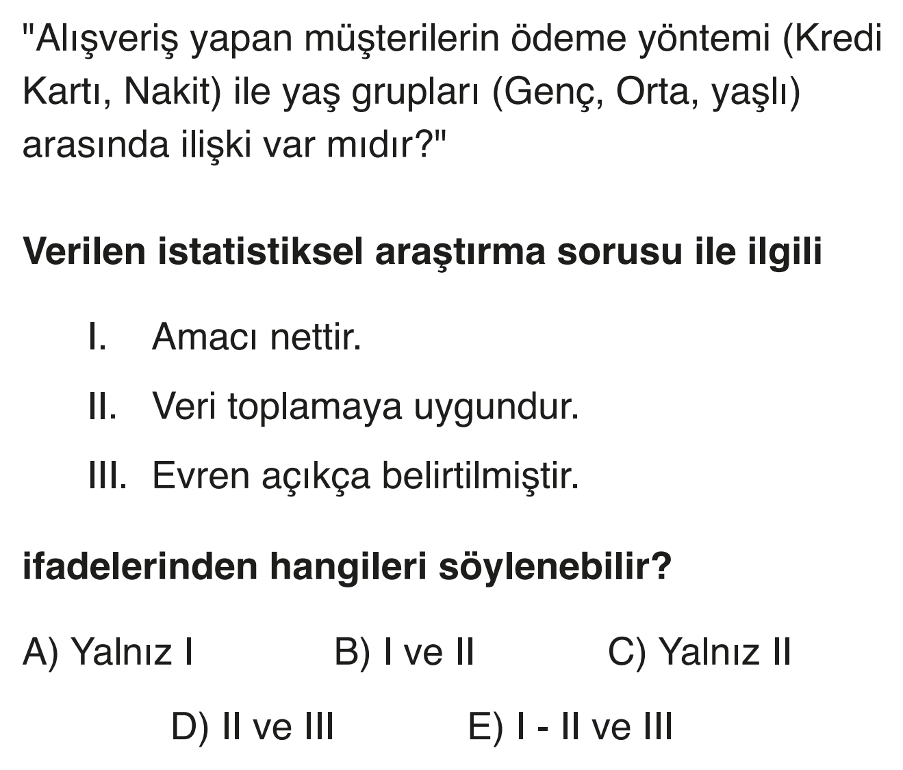
Çözüm
- Soru ödeme yöntemi ile yaş grubu arasındaki ilişkiyi açıkça soruyor → amaç net (I).
- İki değişken de kategoriktir; veri toplanabilir (II).
- Hangi müşterilerin (hangi mağaza, şehir) incelendiği belirtilmemiş → evren açık değil. Cevap: I ve II.
Cevap: B
Soru 2Cevap: B
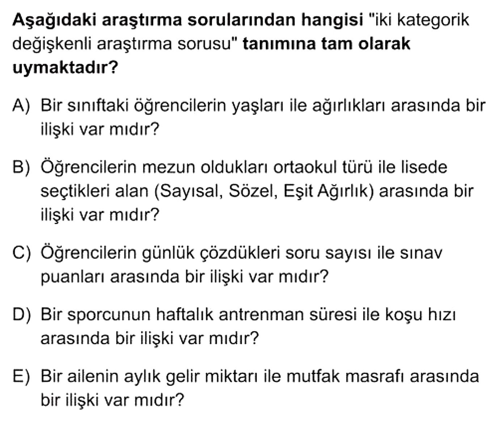
Çözüm
- Yaş, ağırlık, soru sayısı, puan, süre, hız, gelir ve masraf nicel değişkenlerdir.
- Mezun olunan ortaokul türü ve seçilen alan ikisi de kategoriktir.
- Tanıma tam uyan soru B'dir.
Cevap: B
Soru 3Cevap: E
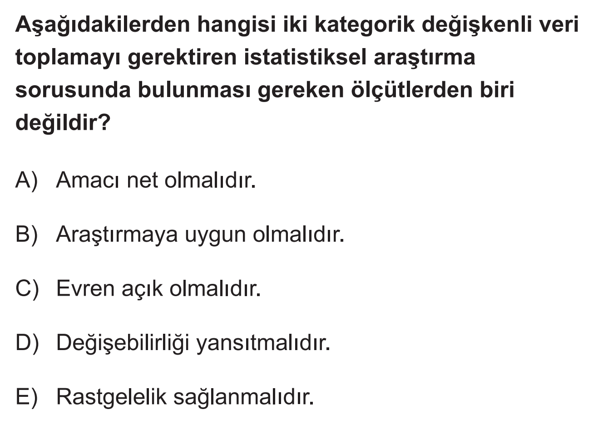
Çözüm
- Araştırma sorusu ölçütleri: amaç net, araştırmaya uygun, evren açık, değişken açık, veri toplanabilir, değişebilirlik…
- Rastgelelik veri toplama planının bir aşamasıdır.
- Ölçüt olmayan → E.
Cevap: E
Soru 4Cevap: C
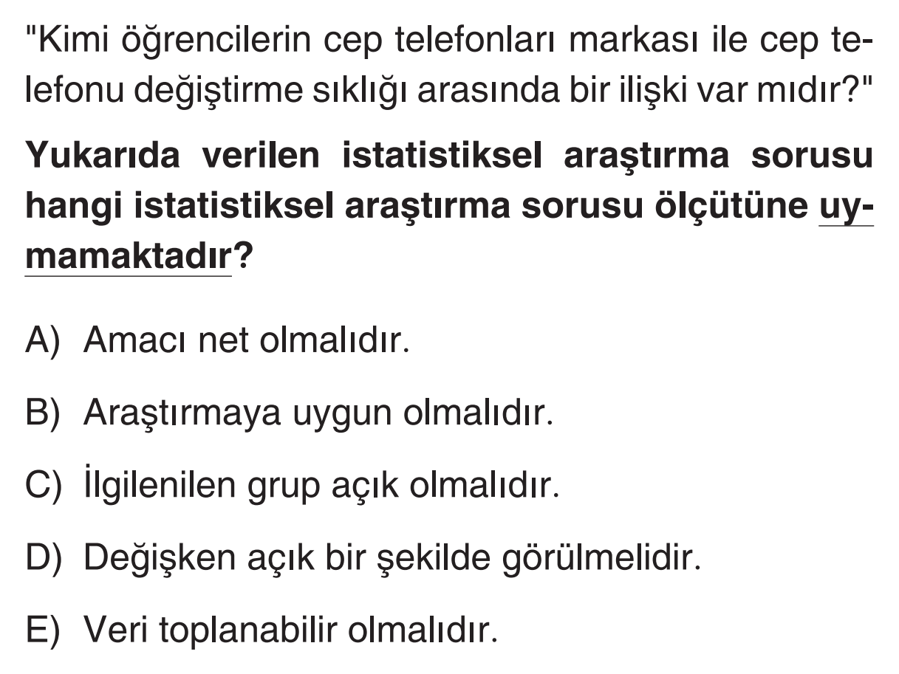
Çözüm
- Soru telefon markası ile değiştirme sıklığını ilişkilendiriyor; değişkenler ve amaç net.
- "Kimi öğrenciler" ifadesi hangi öğrencilerin incelendiğini belirtmiyor.
- Uyulmayan ölçüt: ilgilenilen grup açık olmalıdır → C.
Cevap: C
Soru 5Cevap: C
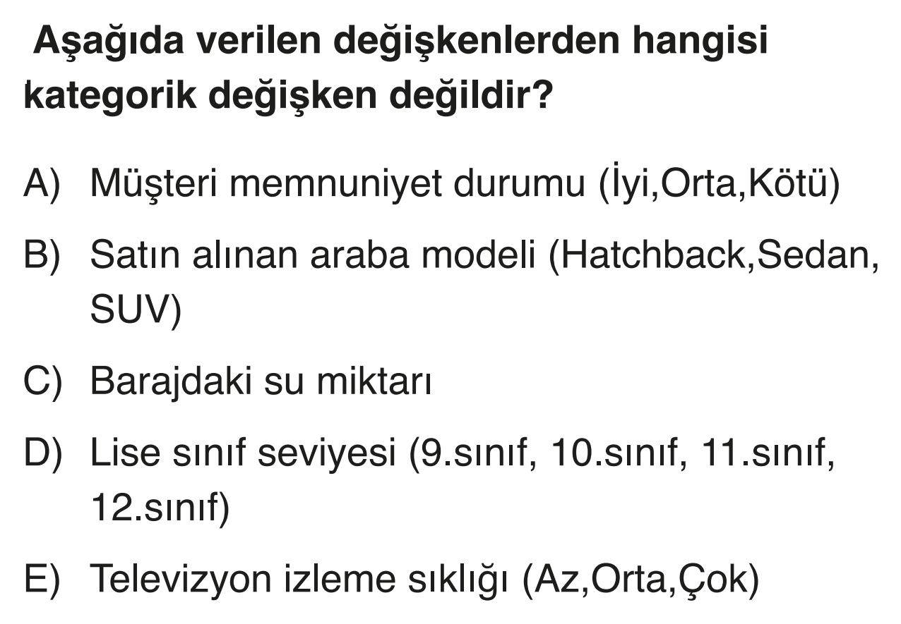
Çözüm
- Memnuniyet durumu, araba modeli, sınıf seviyesi ve izleme sıklığı (az/orta/çok) kategoriktir.
- Barajdaki su miktarı ölçülerek sayıyla ifade edilir.
- Kategorik olmayan → C.
Cevap: C
Soru 6Cevap: D
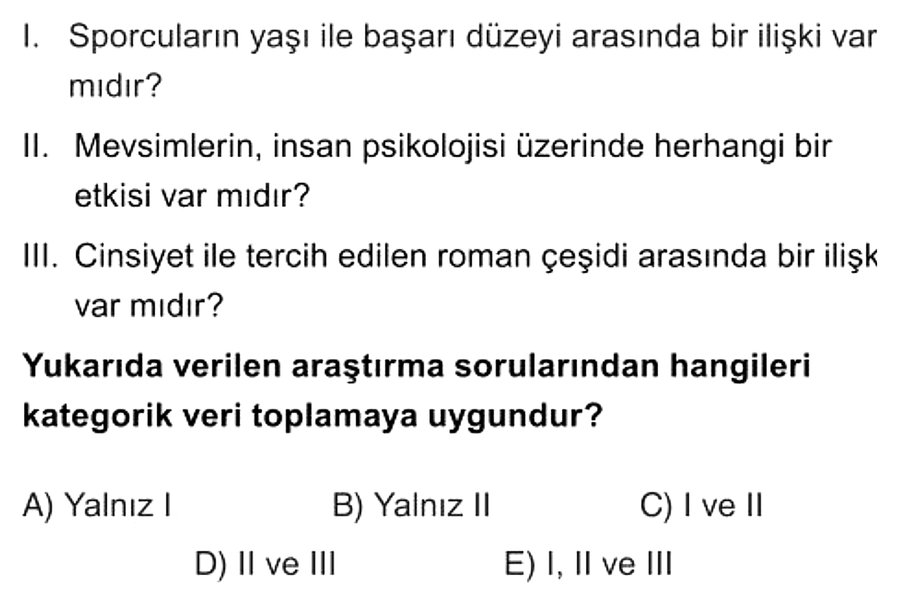
Çözüm
- I'de sporcuların yaşı nicel bir değişkendir.
- II'de mevsimler ve psikolojik durum kategoriktir; III'te cinsiyet ve roman çeşidi kategoriktir.
- Kategorik veri toplamaya uygun: II ve III.
Cevap: D
Soru 7Cevap: E
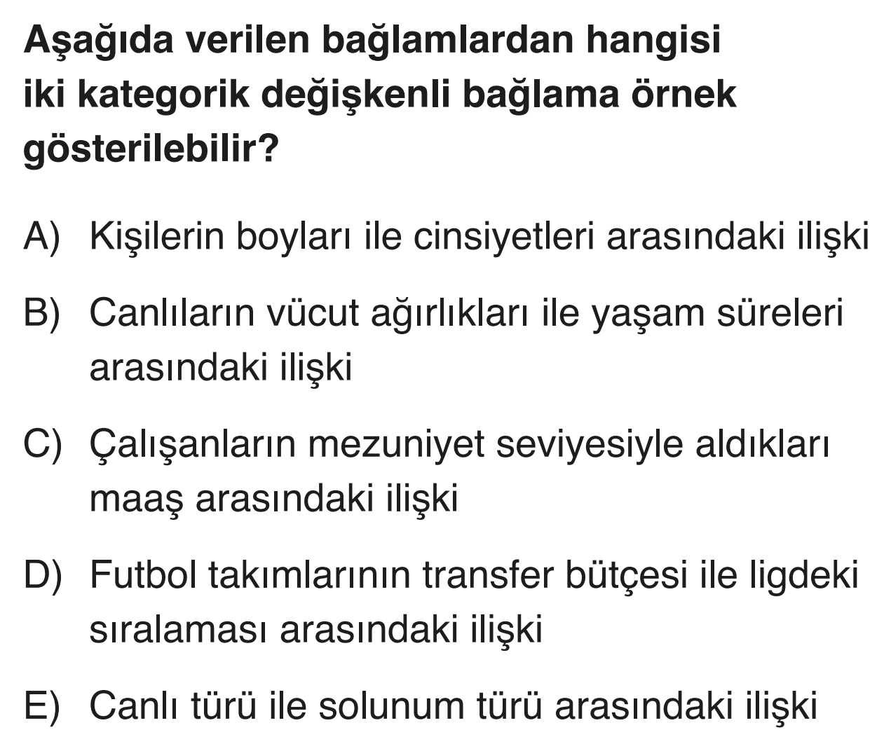
Çözüm
- Boy, vücut ağırlığı, yaşam süresi, maaş, bütçe ve sıralama nicel değişkenlerdir.
- Canlı türü ve solunum türü gruplara ayrılır.
- İki kategorik değişkenli bağlam E'dir.
Cevap: E
Soru 8Cevap: B
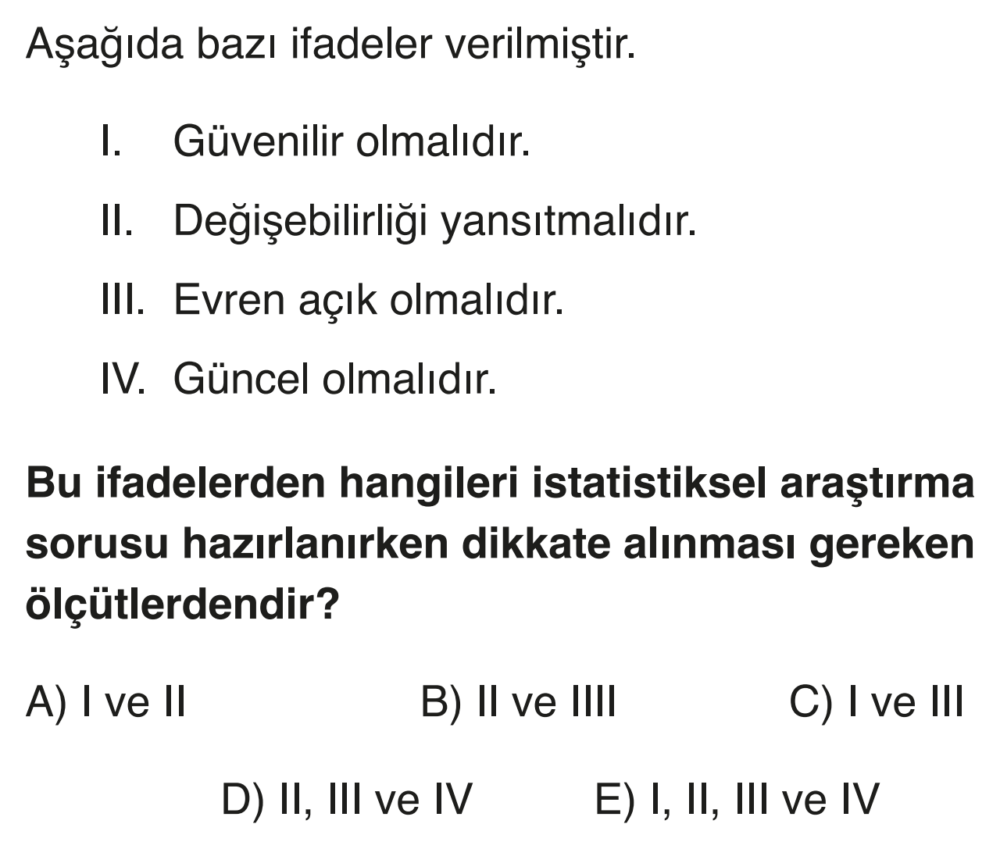
Çözüm
- Araştırma sorusu ölçütlerinden ikisi: değişebilirliği yansıtmalı, evren açık olmalı.
- Güvenilirlik ve güncellik dijital veri kaynaklarında aranan özelliklerdir.
- Cevap: II ve III → B.
Cevap: B
Soru 9Cevap: C
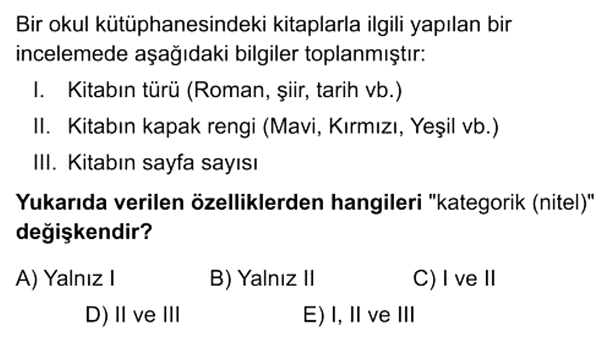
Çözüm
- Kitabın türü (roman, şiir…) bir gruptur → kategorik.
- Kapak rengi de gruptur → kategorik.
- Sayfa sayısı sayısaldır. Cevap: I ve II.
Cevap: C
Soru 10Cevap: A
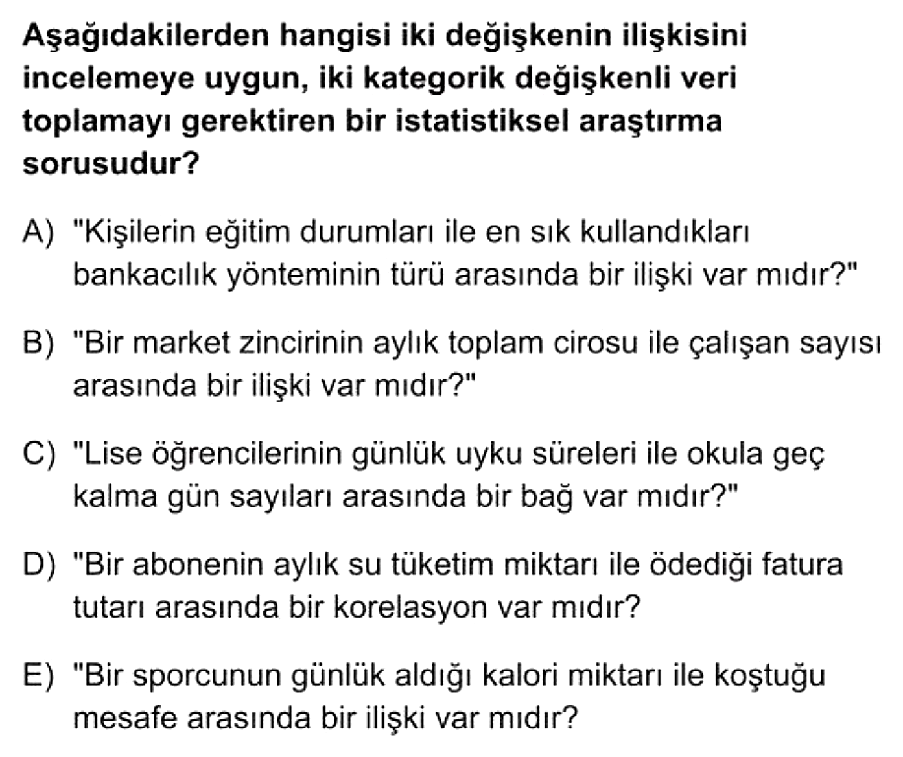
Çözüm
- Ciro, çalışan sayısı, uyku süresi, gün sayısı, su miktarı, fatura, kalori ve mesafe nicel değişkenlerdir.
- Eğitim durumu ve bankacılık yöntemi türü ikisi de kategoriktir.
- Uygun araştırma sorusu A'dır.
Cevap: A
Soru 11Cevap: C
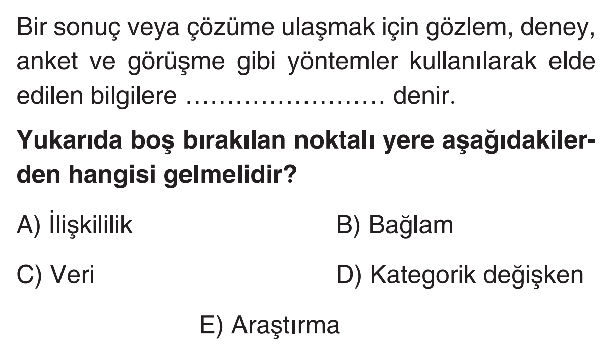
Çözüm
- Gözlem, deney, anket ve görüşme ile elde edilen bilgiler bir araştırmanın hammaddesidir.
- Bu bilgilere veri denir.
- Boşluğa "veri" gelir → C.
Cevap: C
Soru 12Cevap: B
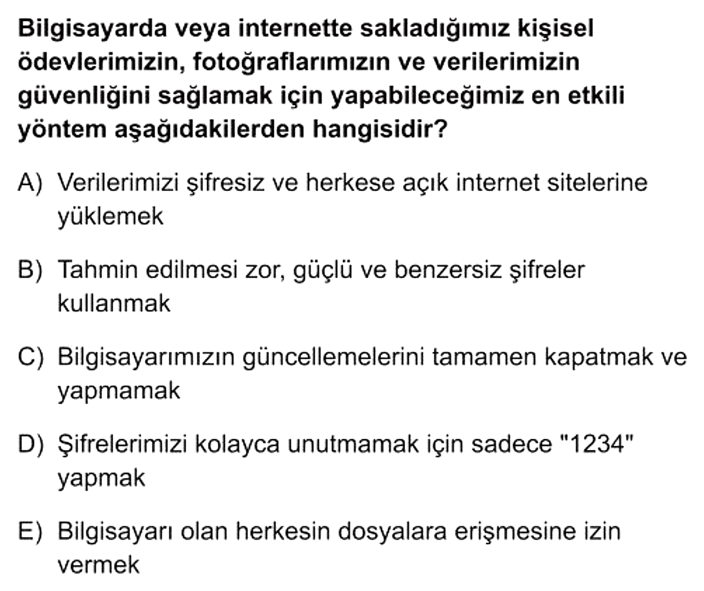
Çözüm
- Şifresiz, herkese açık paylaşım ve basit şifreler verileri korumaz.
- Güncellemeleri kapatmak güvenlik açığı oluşturur.
- En etkili yöntem güçlü ve benzersiz şifre kullanmaktır → B.
Cevap: B
Soru 13Cevap: E
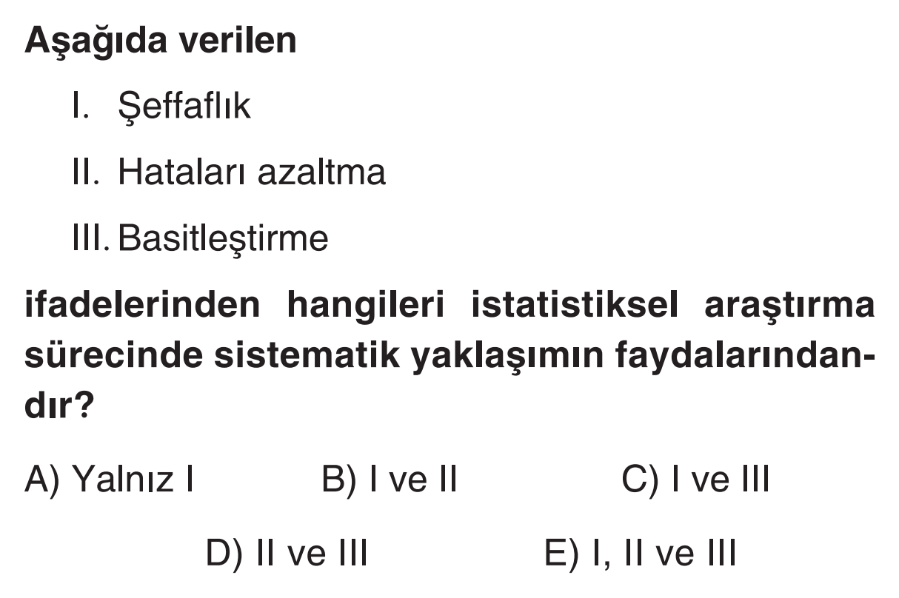
Çözüm
- Sistematik yaklaşım süreci izlenebilir kılar → şeffaflık (I).
- Adım adım ilerleme hataları erken fark ettirir → hataları azaltma (II).
- Karmaşık sorunu küçük parçalara böler → basitleştirme (III). Cevap E.
Cevap: E
Soru 14Cevap: D
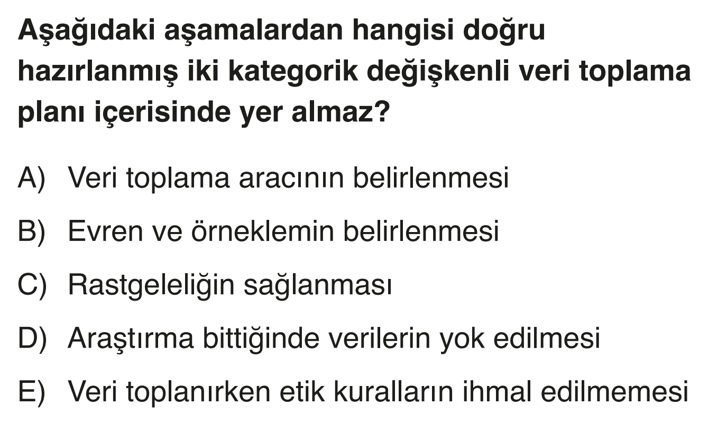
Çözüm
- Veri toplama aracı, evren–örneklem, rastgelelik ve etik kurallar planın aşamalarıdır.
- Verilerin araştırma bitince yok edilmesi planın bir aşaması değildir.
- Cevap D.
Cevap: D
Soru 15Cevap: E
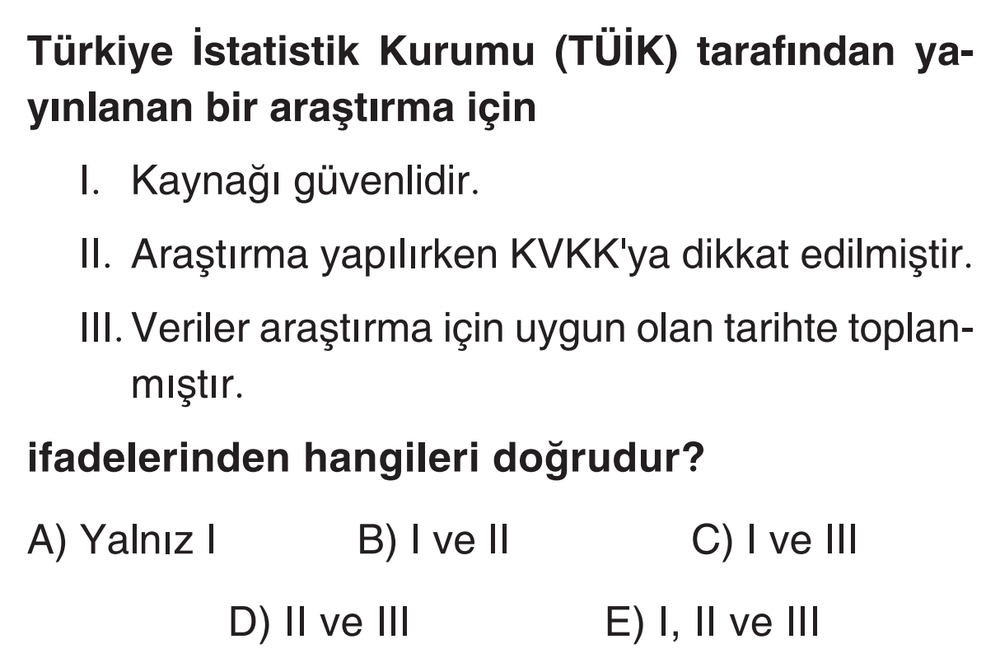
Çözüm
- TÜİK resmî bir kurumdur → kaynak güvenilirdir (I).
- Resmî kurum kişisel verileri KVKK'ya uygun işler (II).
- Yayınlanan araştırma verileri uygun dönemde toplanmıştır (III). Cevap: I, II ve III.
Cevap: E
Soru 16Cevap: E
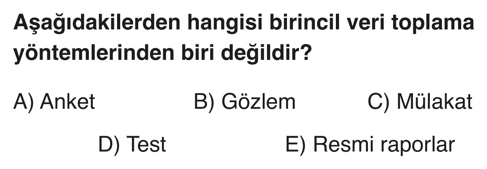
Çözüm
- Birincil veri araştırmacının kendisinin topladığı veridir: anket, gözlem, mülakat, test.
- Resmî raporlar başkaları tarafından hazırlanmış hazır veridir → ikincil.
- Birincil olmayan → E.
Cevap: E
Soru 17Cevap: A
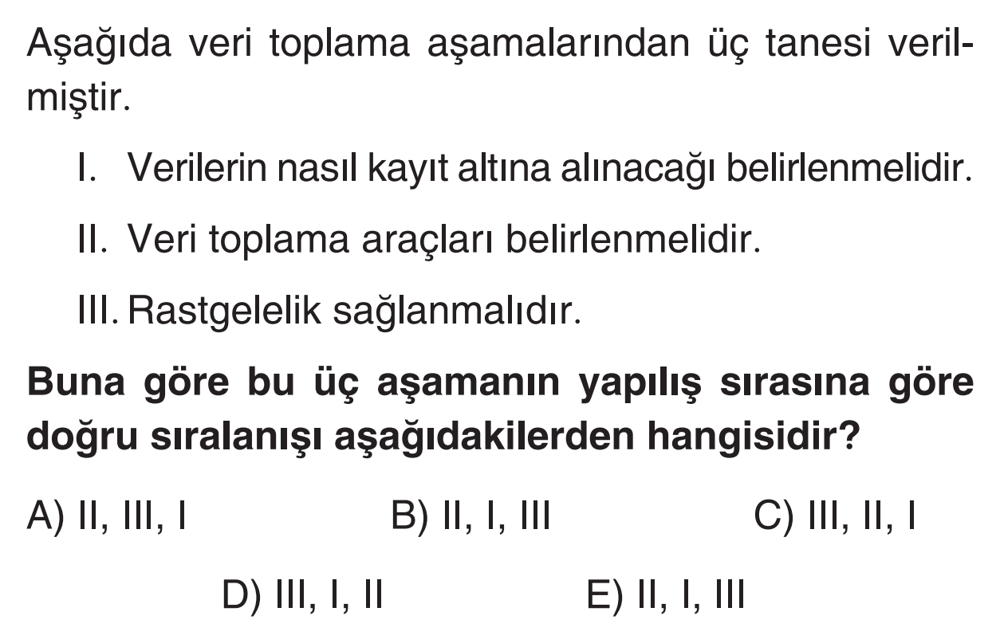
Çözüm
- Önce veri toplama araçları belirlenir (II).
- Ardından örneklem seçiminde rastgelelik sağlanır (III).
- Son olarak verilerin nasıl kaydedileceği belirlenir (I). Sıra: II, III, I → A.
Cevap: A
Soru 18Cevap: C
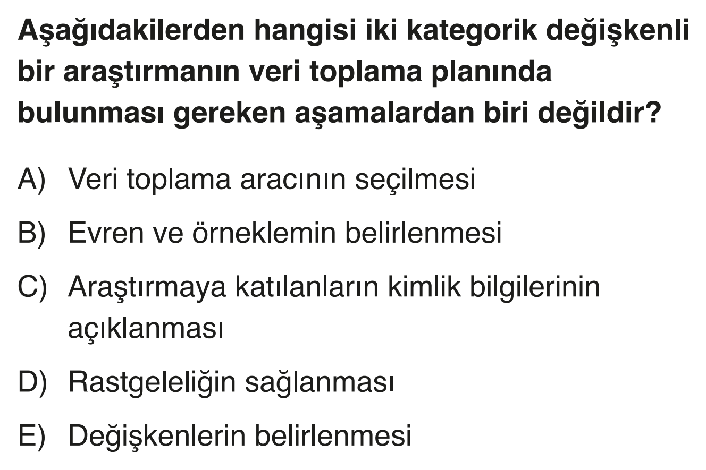
Çözüm
- Araç seçimi, evren–örneklem, rastgelelik ve değişkenler planın aşamalarıdır.
- Katılımcıların kimlik bilgilerinin açıklanması gizlilik ilkesine aykırıdır.
- Plan aşaması olmayan → C.
Cevap: C
Soru 19Cevap: A
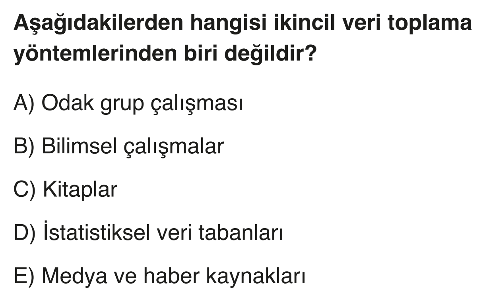
Çözüm
- İkincil veri: bilimsel çalışmalar, kitaplar, istatistik veri tabanları, medya kaynakları.
- Odak grup çalışması araştırmacının katılımcılarla doğrudan yaptığı görüşmedir → birincil.
- İkincil olmayan → A.
Cevap: A
Soru 20Cevap: B
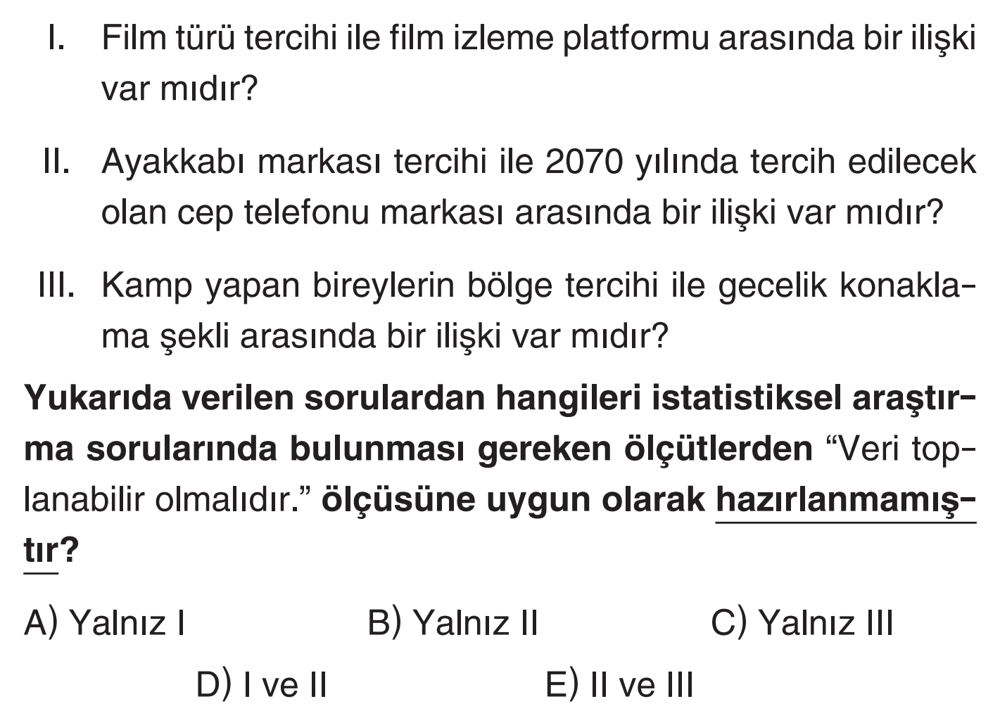
A)Yalnız IB)Yalnız IIC)Yalnız IIID)I ve IIE)II ve III
Çözüm
- I ve III'teki tercihler bugün anketle toplanabilir.
- II'de 2070 yılında tercih edilecek telefon markası bugün bilinemez; veri toplanamaz.
- Ölçüte uygun olmayan: Yalnız II.
Cevap: B